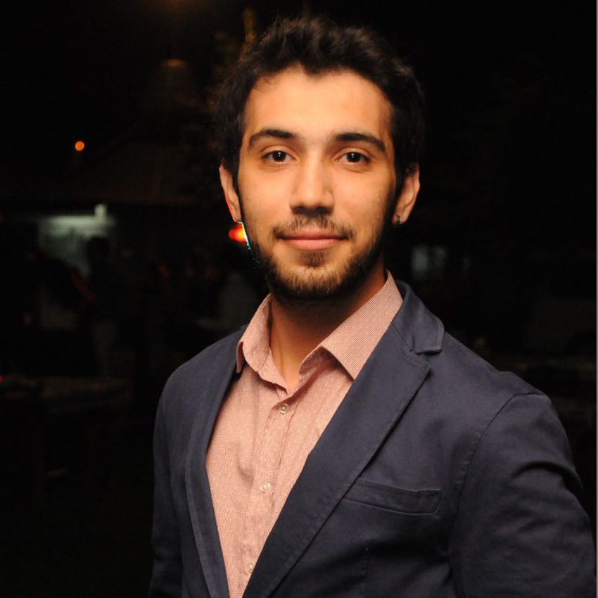

<div class="c-speaker">
    <div class="l-grid">
        <div class="l-grid__col--lg-4">
            <figure class="c-speaker__image">
                
            </figure>
        </div>
        <div class="l-grid__col l-grid__col--lg-8">
            <h3 class="c-speaker__name">Ömer Çıtak</h3>
            <p class="c-speaker__description">
                Yaklaşık 6 senedir sektörde yazılım geliştirme ve uygulama güvenliği ile alakalı pozisyonlarda çalışmaktadır. Yıllarca hackingin underground (Siyah Şapka) tarafında yer almıştır. Çeşitli kurumlar ile yaşadığı hukuki sorunlar; beyaz şapka tarafına geçmesine vesile olmuştur.
                <br>
                Bu alanlarda kendini geliştirmek isteyenlere yardımcı olmak ve Özgür Yazılım manifestosunu yaymak amacı ile Linux Yaz Kampı, Akademik Bilişim gibi etkinliklerde gönüllü eğitmenlik yapmaktadır. Ayrıca zaman zaman konferanslarda seminer vermektedir. Şuan Netsparker’da Security Researcher olarak çalışmaktadır. Ethical Hacking – Offensive & Defensive kitabının yazarıdır. Aynı zamanda ilgilendiği teknik konuları vakit buldukça
                <a href="http://omercitak.com/">omercitak.com</a> sitesindeki bloguna yazmaktadır.
            </p>
            <ul class="list-unstyled c-speaker__social">
                <li class="c-speaker__social__item"><a href="https://www.facebook.com/Om3rCitak" target="_blank"><i
                        class="fa fa-facebook"></i></a></li>
                <li class="c-speaker__social__item"><a href="https://github.com/Om3rCitak" target="_blank"><i
                        class="fa fa-github"></i></a></li>
                <li class="c-speaker__social__item"><a href="https://twitter.com/Om3rCitak" target="_blank"><i
                        class="fa fa-twitter"></i></a></li>
            </ul>
        </div>
    </div>
</div>
